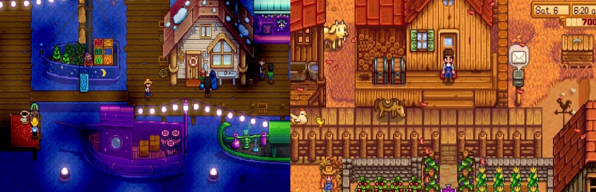
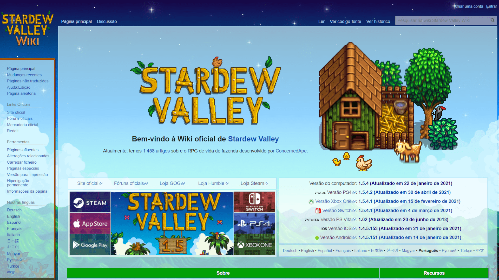

Stardew Valley é um RPG sem fim da vida no campo! Você herdou a antiga fazenda de seu avô no Vale do Orvalho. Equipado com ferramentas de segunda mão e algumas moedas,
você irá começar sua nova vida. Será que você consegue aprender a viver da terra e transformar esses campos absurdamente vegetados em uma casa próspera? Não vai ser fácil.
Desde que Corporação Joja veio à cidade, os antigos modos de vida quase desapareceram. O Centro Comunitário, uma vez o lugar mais visitado da cidade, agora está em ruínas.
Mas o vale parece cheio de oportunidades. Com um pouco de dedicação, você pode ser a pessoa que restaurará a grandeza do Vale do Orvalho!
Stardew Valley é um RPG sem fim da vida no campo! Você herdou a antiga fazenda de seu avô no Vale do Orvalho. Equipado com ferramentas de segunda mão e algumas moedas,
você irá começar sua nova vida. Será que você consegue aprender a viver da terra e transformar esses campos absurdamente vegetados em uma casa próspera? Não vai ser fácil.
Desde que Corporação Joja veio à cidade, os antigos modos de vida quase desapareceram. O Centro Comunitário, uma vez o lugar mais visitado da cidade, agora está em ruínas.
Mas o vale parece cheio de oportunidades. Com um pouco de dedicação, você pode ser a pessoa que restaurará a grandeza do Vale do Orvalho!

O jogador pode selecionar um de cinco tipos de fazenda de acordo com sua preferência em estilo de jogo, como uma com mais oportunidades de pilhamento da terra,
uma com mais recursos de mineração, e outra com um rio de pesca. O campo da fazenda é inicialmente transbordado de pedras, árvores, troncos, e mato, e o jogador
deve trabalhar para limpá-los para recomeçar a fazenda, tendendo a plantações e pecuária para gerar lucros e poder expandir ainda mais as construções e recursos da fazenda.
O jogador pode também interagir com personagens não-jogáveis (NPC) que habitam a cidade, incluindo a possibilidade de entrar em relacionamentos com estes personagens;
isto pode levar a um casamento, que leva o NPC a ajudar o jogador a cuidar da fazenda. O jogador também pode fazer pescas, cozinhar, construir objetos, e também explorar
cavernas geradas processualmente com materiais e minérios para minerar ou batalhar as criaturas por dentro. Ao realizar essas tarefas, o personagem, consegue aperfeiçoar
suas habilidades em cada umas das diferentes competências, desbloqueando itens diferentes e bônus. O jogador pode aceitar diversas missões para ganhar dinheiro adicional,
ou trabalhar em coleções de materiais específicas oferecidas no Centro da Comunidade da cidade para ganhar recompensas adicionais. Todas estas atividades devem ser medidas
com a vida atual do personagem, seu nível de exaustão, e o relógio interno do jogo. Se o personagem ficar muito exausto, ele será trazido de volta à sua casa com energia e
vida restaurada na manhã do dia seguinte, mas tendo perdido as oportunidades de continuar nas atividades do dia seguinte. Se o personagem perder muita vida, ele perderá maioria d
e sua energia e uma quantia aleatória de dinheiro e itens. O jogo utiliza um calendário simplificado, cada ano tendo apenas meses de 28 dias que representam cada estação, que dete
rmina que plantas podem crescer e que atividades podem ser beneficiais. O personagem é avaliado a partir de seu terceiro ano. Não existe nenhum ponto final ao completar o jogo.
ONDE JOGAR STARDEW VALLEY?
Stardew Valley está disponível em várias plataformas e em vários idiomas, inclusive em português brasileiro. No começo ele foi lançado com foco no computador, tanto Windows quanto macOS e Linux. Depois Stardew Valley passou a ser inserido em outras plataformas, como nos smartphones Android e iOS.
Nos consoles, ele está disponível para PlayStation 4, Xbox One (e Xbox Series S/X por retrocompatibilidade), Nintendo Switch e PlayStation Vita. No entanto, o PlayStation Vita não recebeu atualizações do Stardew Valley depois da 1.02, de 2018, por limitações na plataforma.
Esse é um jogo pago, que pode ser comprado em forma física ou digital dependendo da plataforma. Para jogar no computador, o download de Stardew Valley é feito pela Steam. Já para a versão
de smartphones do Stardew Valley, download é pela Google Play Store ou App Store.

imagem do site STARDEW VALLEY WIKI
Enquanto Stardew Valley pode ser um jogo simples, ele ainda tem vários elementos complexos que podem ser difíceis de aprender ou mesmo decorar por conta própria. Por causa disso, foi criada a Stardew Valley Wiki , uma página de wiki inteiramente para o jogo.
A Stardew Valley wiki é oficial e hospedada pelo criador ConcernedApe. Mas a maior parte do conteúdo, como em qualquer outra wiki, surgiu com a colaboração de outros jogadores apaixonados pelo jogo. Com o tempo a Stardew Valley Wiki foi crescendo e ganhando até traduções para outros idiomas, como o português. Atualmente, a Stardew Valley Wiki tem cerca de 1500 artigos sobre o jogo.
Mas por que a Stardew Valley Wiki é tão relevante? O motivo para isso é por ser um site completo com todos os detalhes e segredos do jogo, justamente para ajudar os jogadores. São informações, por exemplo, sobre em que lugar, estação e horário cada peixe pode ser pescado no jogo, sobre qual plantação gera maior lucro na estação ou sobre a rotina e os interesses de cada aldeão.
Esse tipo de dado não fica explícito no jogo, cabendo ao jogador descobrir enquanto joga. Para jogadores casuais ou que gostam de descobrir por conta própria, a Stardew Valley Wiki pode não interessar. Mas é uma ferramenta ótima para quem quer planejar o que fazer a cada dia no jogo ou completar as coleções e quer uma ajuda stardew valley wiki